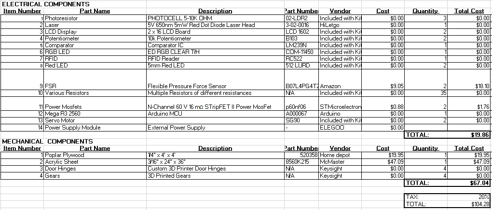

Food Locker Mechanical Design
In this section we will mainly focus on the mechanical design, decisions, and calculations that went into the Food Locker project
The overall view shows all the components that make up the Food Locker project. The features related to the mechanical design are the material selection, manufacturing process, motorized door mechanisms, and heat transfer within the locker.
First, the material we are selecting for the overall structure of our prototype is going to be made out of ¼” plywood that we plan on manufacturing utilizing a laser cutter. To hold the structure together we plan on laser cutting dovetail edges that meet and locking the pieces in place with wood glue.
As for the LCD holder on top, we plan on 3D printing this portion of the system since it is a more organic shape. As for the acrylic doors, we plan on also cutting these out with a laser cutter.
View of Arduino location under display housing
The Arduino will be housed within the LCD holder since this is a central hub that can easily connect the necessary electrical devices and sensors.
Insulated Bottom with wood/plastic top cover
The bottom of the locker will have an insulated bottom that will have a wood or plastic separator on top of it. This will work as a means to stop the heat transfer of the food from escaping the bottom. This also acts as a pressure plate once the FSR sensors are integrated to the bottom of the food locker. If there are any items still in the locker, the insulated bottom will be able to transfer the load to the sensors.
Motorized door mechanism
The door’s motion will be achieved using a belt and pulley system that will be powered by a motor. We decided to use a servo motor and not a stepper motor like the one we have in figure 5. We decided to use a servo motor since it would have a higher torque than the stepper motor.
Bill of Materials (BOM)
